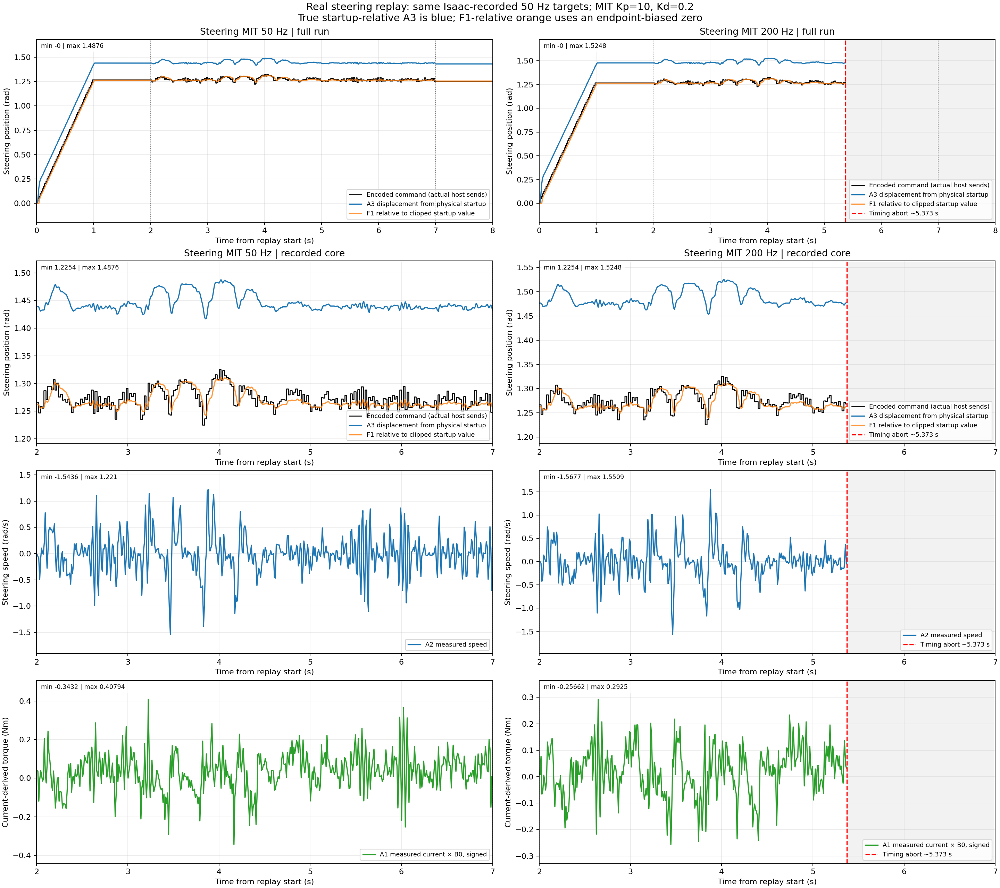
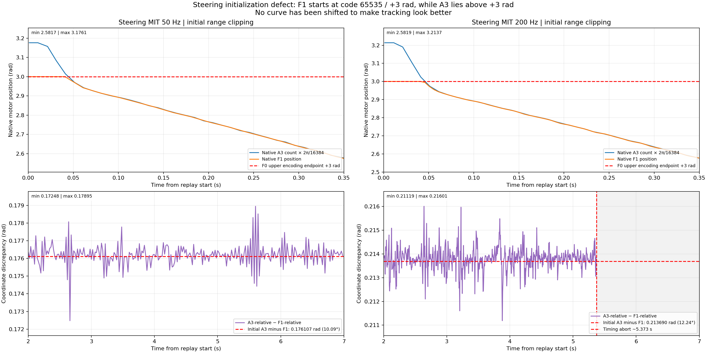
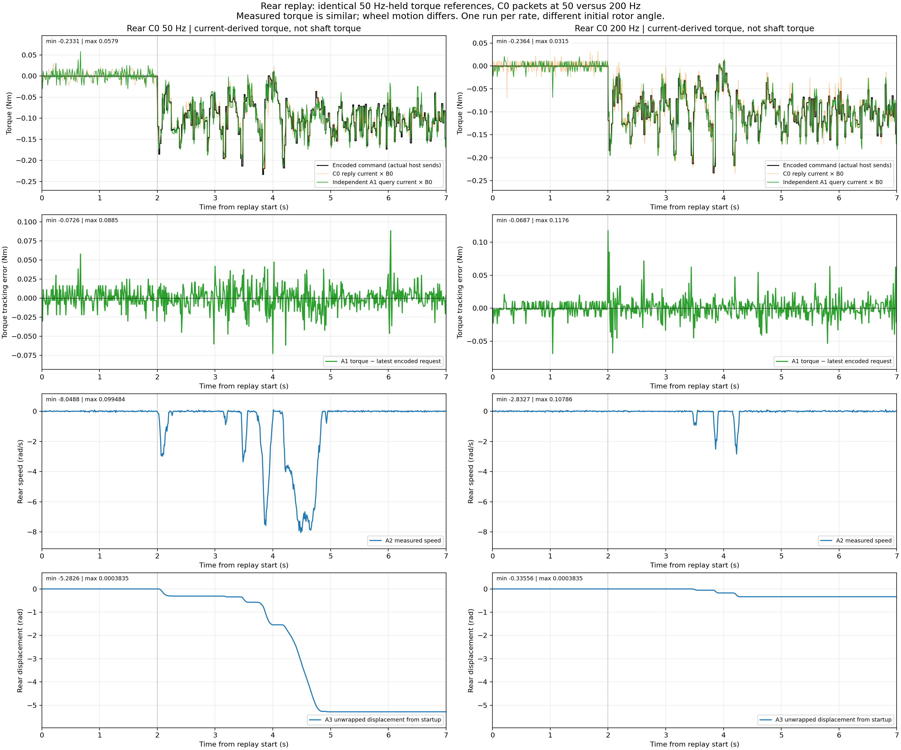
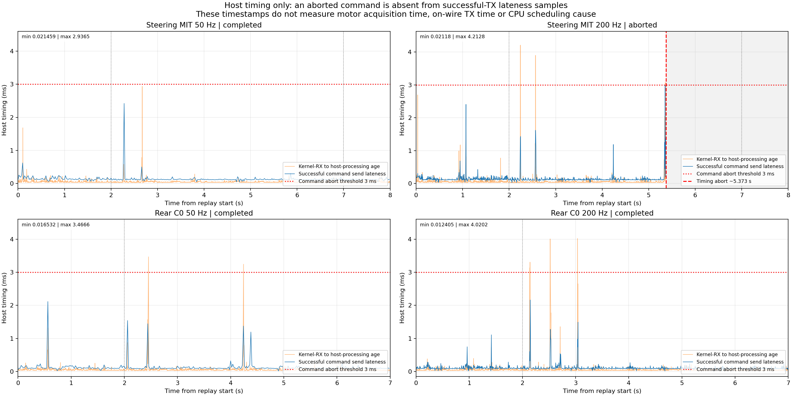
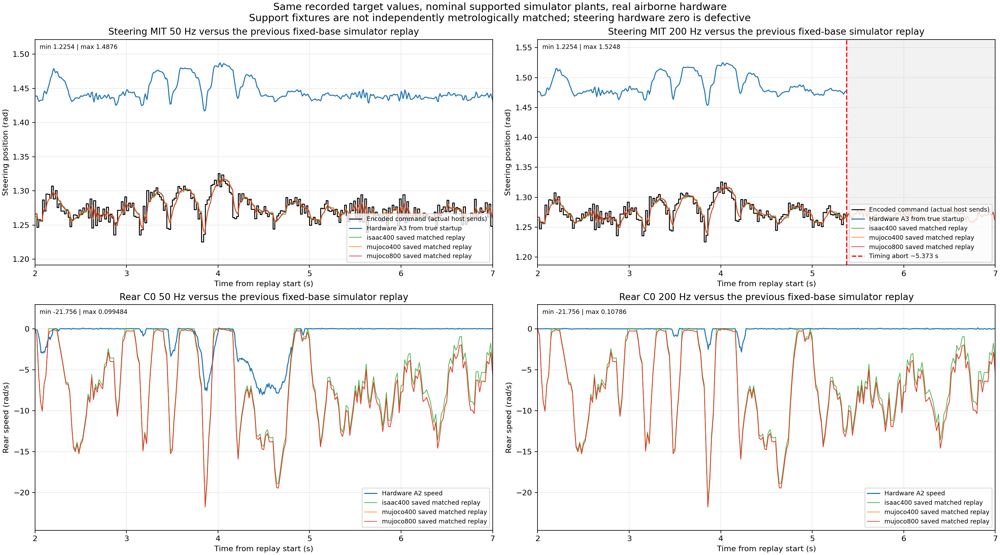

Steering has a clipped startup MIT zero; use A3 startup-relative displacement to assess physical accuracy. Rear current tracking is similar, while wheel motion differs. Steering 200 Hz aborted. All tests were airborne/free; no plotted curve is shifted or bias-corrected.
Full report · Exact statistics · Verification




